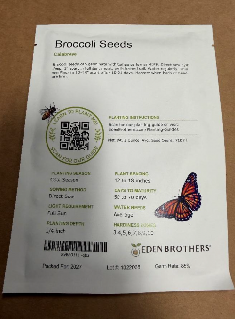
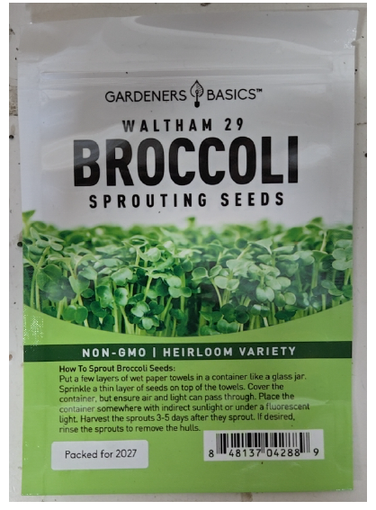
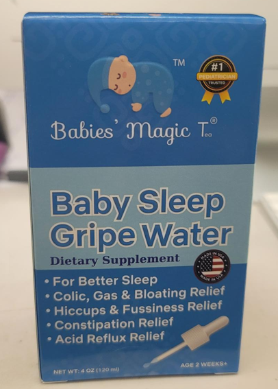
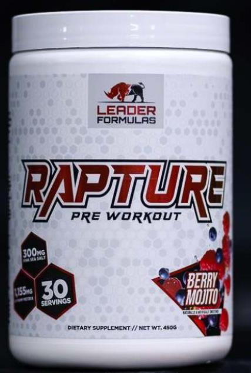
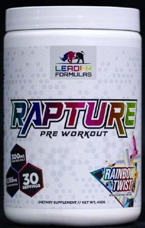
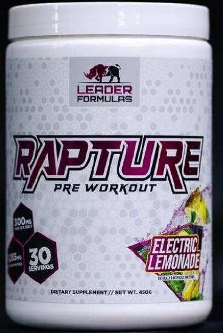

| Latest · All active · Archive · Subscribe → | 🛡️ FOOD RECALL DIGEST Two more broccoli seed recalls tied to a Salmonella outbreak, plus a baby gripe water and a preworkout recall Fri, Oct 9, 2026 · new since Oct 5 | 5 NEW TODAY | | 3 GERMS & TOXINS | | 0 ALLERGENS | | 375 OPEN NOW |
| | Expand all · Collapse all | | | ▸In this issue5 new recalls, most serious first  | HIGH RISK Eden Brothers Calabrese broccoli seeds Salmonella · sold online nationwide · Don't use |  | HIGH RISK Gardeners Basics broccoli sprouting seeds, 1 lb Salmonella · sold online nationwide · Don't use |  | HIGH RISK Babies' Magic Tea Baby Sleep Gripe Water, one lot Undeclared alcohols (ethanol, methanol, isopropanol) · sold online · Stop using |  | MEDIUM RAPTURE Preworkout powder, lot 260327‑4 Contains DMAA (heart risk) · nationwide, stores and online · Stop using | | MEDIUM GRACE chicken Vienna sausages, 140 g cans Illegally imported from Jamaica (not eligible) · AL, FL, GA, MD, TX · Don't eat |
| | |
| | | ▸Recall details ▸HIGH RISK · FDA · Oct 7 · Eden Brothers Calabrese broccoli seeds| Eden Brothers Calabrese Broccoli Seeds (packet, 1 oz, 1 lb) | | | ⚠️ | PROBLEM Possible Salmonella. The supplier told Eden Brothers the seeds may be contaminated. FDA links seed lot W4105 to a Salmonella outbreak tied to broccoli sprouts and microgreens. | | 🔍 | LOOK FOR | Eden Brothers Calabrese Broccoli Seeds, Packet, item code SVBRO111-qb1 |
| Eden Brothers Calabrese Broccoli Seeds, 1 Ounce, item code SVBRO111-qb2 |
| Eden Brothers Calabrese Broccoli Seeds, 1 Pound, item code SVBRO111-qb4 |
| Eden Brothers lot 1022067 or 1022068 (supplier lot W4105), printed on the packet or bag |
| Bought Jul 8 to Sep 28, 2026, depending on size |
| | 🩺 | ILLNESSES No illnesses reported to date. | | 📍 | WHERE SOLD EdenBrothers.com and Amazon.com, shipped nationwide. | | ➜ Don't plant, sprout, eat or share the seeds, and don't use them for microgreens. Seal them in a bag and put them in the household trash, not compost. Wash your hands and anything the seeds touched. Ask for a full refund with the recall reply form linked in the notice. Questions: Eden Brothers, 855‑440‑2929 (Mon to Fri 9 a.m. to 5 p.m. ET), service@edenbrothers.com. |
| |
|
| | | ▸HIGH RISK · FDA · Oct 8 · Gardeners Basics broccoli sprouting seeds, 1 lb| Gardeners Basics Waltham 29 Broccoli Sprouting Seeds, 1 lb | | | ⚠️ | PROBLEM Possible Salmonella. The seed supplier recalled bulk seed lot W4105 after FDA found Salmonella in a broccoli seed sample. The company says the seeds were linked to a sprout grower in an FDA multistate outbreak investigation. | | 🔍 | LOOK FOR | Gardeners Basics Waltham 29 Broccoli Sprouting Seeds, 1 lb (454 g), white and green resealable pouch |
| | 🩺 | ILLNESSES No illnesses reported to the company as of Oct 6, 2026. | | 📍 | WHERE SOLD Online, shipped nationwide: Amazon, gardenersbasics.com, TikTok Shop, Walmart, eBay and Etsy. Sales have stopped. | | ➜ Stop using the seeds. Don't eat the seeds or any sprouts grown from them. Seal them in a bag and throw them away. No return is needed. For a refund, contact the company with your order number and where you bought it. If you are not sure your bag is affected, stop using it and contact the company. Questions: call or text 801‑769‑6181 (any day; leave a voicemail or text), info@gardenersbasics.com. |
| |
|
| | | ▸HIGH RISK · FDA · Oct 6 (FDA posted Oct 7) · Babies' Magic Tea Baby Sleep Gripe Water, one lot| Babies' Magic Tea Baby Sleep Gripe Water, 4 fl oz (lot 25122bw) | | | ⚠️ | PROBLEM FDA testing found undeclared alcohols in this lot. Levels were about 8.3% ethanol, 0.35% methanol and 0.48% isopropanol. These alcohols can affect the central nervous system. Ethanol exposure in infants has been linked to long-term developmental effects. At the label's recommended amounts, possible effects include drowsiness, poor coordination, behavior changes, nausea, vomiting and stomach pain. Larger amounts may raise the risk of slowed breathing and other serious harm. | | 🔍 | LOOK FOR | Babies' Magic Tea brand Baby Sleep Gripe Water, 4 fl oz (about 118 mL) amber bottle in a blue cardboard box, with an oral syringe |
| Lot 25122bw, printed on the bottom of the box and on a side panel of the bottle |
| | 🩺 | ILLNESSES No adverse events reported to the company for this lot. | | 📍 | WHERE SOLD Sold through Secrets of Tea and online retailers, including the company's website and Amazon. No states or physical stores are named. | | ➜ Stop using any bottle from lot 25122bw. Throw it away or return it to where you bought it for a refund. Get medical care if your baby has symptoms after using it, and contact the company. Questions: Pacific Health Sciences, 310‑457‑1775 (Mon to Thu 9:30 a.m. to 5 p.m. PT), myorder@pacifichealth.com. |
| |
|
| | | ▸MEDIUM · FDA · Oct 6 (FDA posted Oct 7) · RAPTURE Preworkout powder, lot 260327‑4| RAPTURE Preworkout dietary supplement powder, 450 g (lot 260327‑4) | |  |  | |
| | ⚠️ | PROBLEM FDA testing found 1,3-Dimethylamylamine (DMAA) in the product. DMAA can raise blood pressure. It could lead to heart problems, including heart attack, shortness of breath and chest tightness. | | 🔍 | LOOK FOR | RAPTURE Preworkout, Rainbow Twist, UPC 710154236506 |
| RAPTURE Preworkout, Electric Lemonade, UPC 710143 236513 (as printed in the notice) |
| RAPTURE Preworkout, Berry Mojito, UPC 710154236544 |
| 450 g round plastic tub, red and black lettering, rhinoceros print seal |
| Distributed Jan 29, 2025 to May 25, 2026 |
| | 🩺 | ILLNESSES No adverse events reported to the company. | | 📍 | WHERE SOLD Sold nationwide in retail stores and online at leaderformulas.com. Stores are not named in the notice. | | ➜ Stop using it. Return it to where you bought it for a full refund. Talk to a doctor about any problems that may be related. Questions: Leader Formulas, 832‑855‑7562 (Mon to Fri 9 a.m. to 5 p.m. CT), Patrick@leaderformulas.com. |
| |
|
| | | ▸MEDIUM · USDA · Oct 6 · public health alert · GRACE chicken Vienna sausages, 140 g cans| GRACE Ready to Eat Chicken Vienna Sausages, 140 g cans (illegally imported from Jamaica) | | ⚠️ | PROBLEM These canned sausages were illegally imported from Jamaica. Jamaica is not eligible to export meat or poultry to the US. FSIS found them during routine checks of imported products. FSIS is still investigating how they entered the country. | | 🔍 | LOOK FOR | 140‑g. cans of "GRACE READY TO EAT CHICKEN VIENNA SAUSAGES." |
| 140‑g. cans of "GRACE READY TO EAT CHICKEN VIENNA SAUSAGES HOT & SPICY." |
| Establishment number "EST. NO G-01" inside the Jamaica mark of inspection |
| | 🩺 | ILLNESSES No confirmed reports of illness or injury. | | 📍 | WHERE SOLD The importer sent them to retail locations in Alabama, Florida, Georgia, Maryland and Texas. Stores are not named. This is a public health alert, so USDA does not post a store list. | | ➜ Don't eat them. Throw them away or return them to where you bought them. Questions: Sandra Campbell, owner, 305‑887‑9523, purecaribbeandist@gmail.com. |
| |
|
| | |
| | | ▸Updates | ↻ Broccoli sprout Salmonella outbreak: was linked to Evergreen Fresh Sprouts (ID) → now FDA links it to broccoli sprouts and microgreens grown from a contaminated seed lot (Oct 7). An FDA seed sample matched the outbreak strain. Seed lot W4105 is linked to the Home Grown (Oct 2) and Eden Brothers (Oct 7) seed recalls. Still 32 sick in ID, MN, MT, OR, UT and WA, 3 hospitalized, no deaths. | | ↻ E. coli O157:H7 outbreak (FDA ref 1421, 38 sick): was source not yet identified → now FDA says the source is ready-to-eat chicken wraps, which were removed from the market. FDA is still checking whether a single ingredient was contaminated. | | ↻ Yupi “Golpe con Todo” BBQ mixed chips (Inexport Logistics, USDA 025‑2026): was no store list yet → now USDA lists 10 stores in AZ, CA, FL, IL, KY, MN and TX (as of Oct 8, 2026). Every store is listed on the website. | | ↻ Sempio Korean ginseng chicken stew (USDA 024‑2026): was no store list yet → now USDA lists 16 stores in FL, GA, IL, MD, MN, NJ, NY, PA and VA (as of Oct 7, 2026). Every store is listed on the website. | | ↻ Fontanini pork sausage links (USDA 023‑2026): was no retail store list → now USDA lists 6 stores: 2 in CA and 4 Gordon Food Service Stores in FL (as of Oct 8, 2026). Every store is listed on the website. |
| | | ▸Outbreak watchIllness outbreaks FDA and CDC are tracking | | Broccoli sprouts and microgreens (contaminated seed lot W4105) Salmonella Bovismorbificans · 32 sick in ID, MN, MT, OR, UT, WA; 3 hospitalized; no deaths (FDA, updated Oct 7) | | Home Grown (EAK Distribution) seeds |
| | |
Evergreen sprouts are past expiration. The recalled seeds were sold online nationwide. ➜ Don't eat, sprout or sell recalled broccoli seeds |
| | | Alfalfa sprouts and sprout mixes E. coli + Salmonella · 76 sick, 16 states, 6 hospitalized (Oct 1) ➜ Throw away |
| | | Graziers raw milk cheese E. coli O26 · 13 sick, 9 states, 8 hospitalized, 3 with kidney failure (Sep 25) ➜ Do not eat |
| | | Ready-to-eat chicken wraps (brand not named) E. coli O157:H7 · 38 sick (FDA outbreak table) ➜ The wraps were already removed from the market. Watch for updates. |
| | | Outbreaks: source not found yet 6 open investigations · Listeria (44, 11, 11 cases) · Salmonella Newport (116), Oranienburg (99), I 4,[5],12:i:- (43) ➜ Watch for updates |
|
| | | ▸Still open26 recalls from past digests not closed yet, most serious first | 363 FDA + 12 USDA recalls still open, however old, with 546 stores named by USDA. |
| | | | ▸Store listsTap an address for directions ▸Yupi “Golpe con Todo” BBQ mixed chips, Inexport Logistics10 stores in 7 states · USDA retail list 025‑2026 as of Oct 8, 2026 · tap to hide ARIZONA · 1 | CALIFORNIA · 3 | FLORIDA · 2 | ILLINOIS · 1 | KENTUCKY · 1 | MINNESOTA · 1 | TEXAS · 1 | | |
| ▸Sempio Korean ginseng chicken stew, Sempio Food Services16 stores in 9 states · USDA retail list 024‑2026 as of Oct 7, 2026 · tap to show FLORIDA · 1 | GEORGIA · 1 | ILLINOIS · 4 | MARYLAND · 1 | MINNESOTA · 1 | NEW JERSEY · 4 | NEW YORK · 1 | PENNSYLVANIA · 1 | VIRGINIA · 2 | | |
| ▸Fontanini pork sausage links, Fontanini Foods6 stores in 2 states · USDA retail list 023‑2026 as of Oct 8, 2026 · tap to hide CALIFORNIA · 2 | FLORIDA · 4 | | |
|
| | | 🛡️ Food Recall Digest Sources: FDA recalls · USDA FSIS · FDA outbreaks · FDA sprouts outbreak page
Audited: every fact checked against the FDA notices, FDA outbreak pages and USDA FSIS recall pages on Oct 9, 2026.
✓ Confirmed = named in the official notice or USDA store list. Lead = sells this brand; not confirmed for recalled lots.
Independent summary of public FDA, USDA and CDC data. Not an official government notice. Not medical advice; if you ate a recalled product and feel sick, contact a doctor.
foodrecalldigest@gmail.com
Website · Past digests · Subscribe · Reply “unsubscribe” to stop |
|